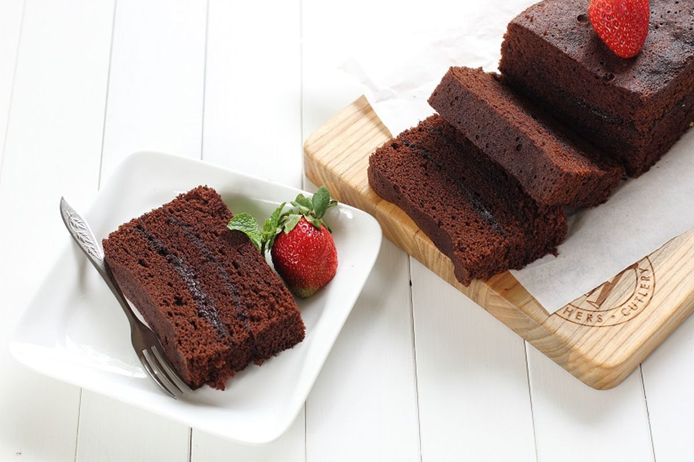

Resep Brownies

Brownies adalah kue cokelat yang memiliki tekstur lembut di dalam dan sedikit renyah di luar. Cocok untuk teman minum teh atau kopi.
Bahan-bahan:
- 150 gram dark chocolate
- 100 gram mentega
- 150 gram gula pasir
- 2 butir telur
- 100 gram tepung terigu
- 1/2 sdt baking powder
Cara Membuat:
- Lelehkan dark chocolate dan mentega, aduk hingga rata.
- Kocok gula dan telur hingga mengembang, tambahkan campuran cokelat leleh.
- Masukkan tepung dan baking powder, aduk perlahan hingga tercampur rata.
- Tuang adonan ke loyang yang sudah dialasi kertas roti.
- Panggang dalam oven suhu 180°C selama 20-25 menit.
- Biarkan dingin, potong sesuai selera, dan sajikan.